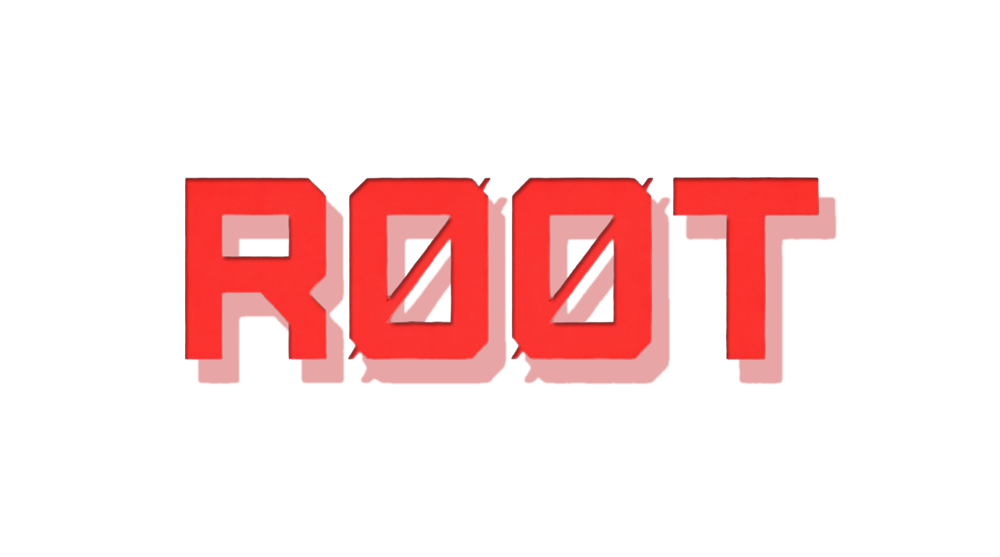
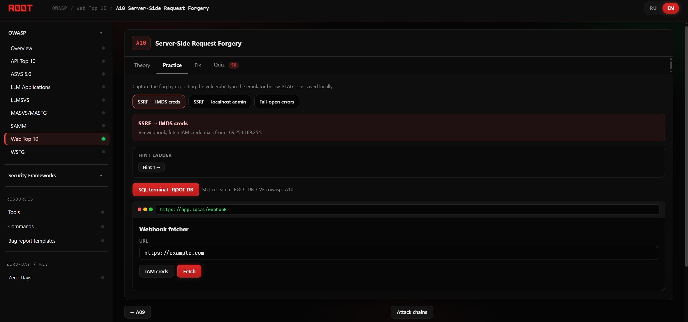
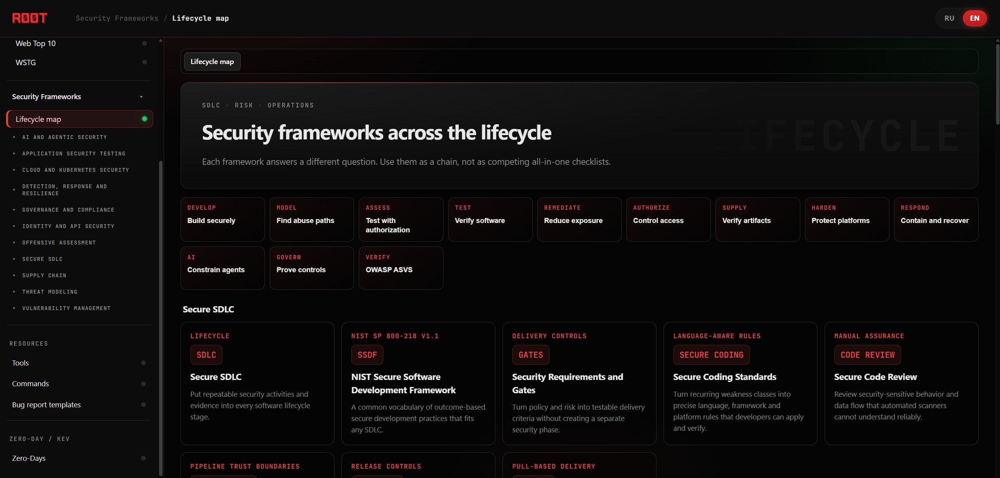
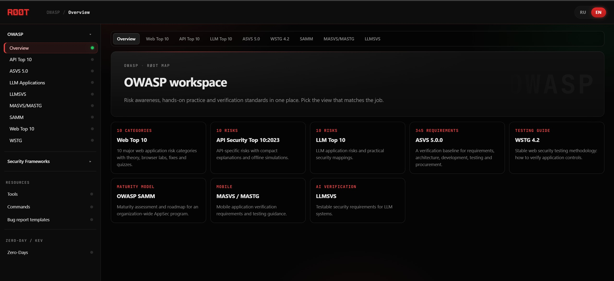
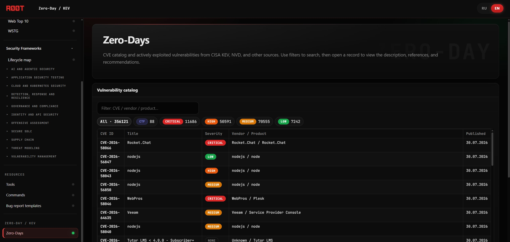
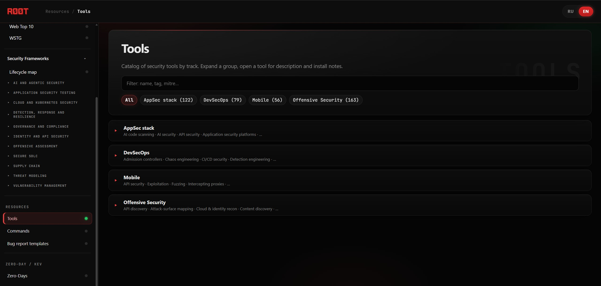
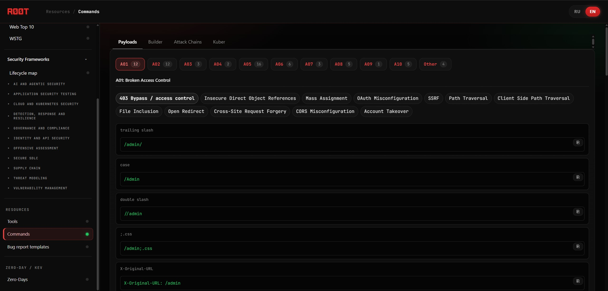
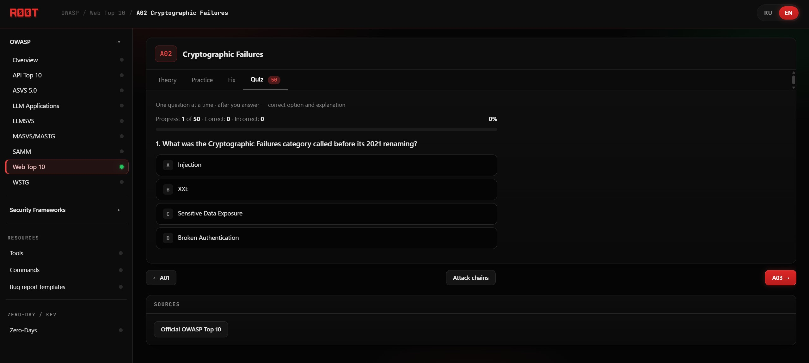

Break and fix
Learn OWASP Web, API, and LLM risks through safe browser simulations, remediation, and quizzes.

OPEN SOURCE · OFFLINE FIRST · APPSEC TO DEVSECOPS
A local security workspace that connects hands-on OWASP practice with verification standards, threat modeling, secure delivery, and vulnerability decisions.
ONE LOCAL WORKSPACE
RØOT connects the technical loop of finding and fixing flaws with the senior-level work of defining requirements, modeling risk, prioritizing remediation, and protecting delivery.
Learn OWASP Web, API, and LLM risks through safe browser simulations, remediation, and quizzes.
Use ASVS, WSTG, MASVS/MASTG, and LLMSVS to turn broad goals into testable evidence.
Connect Secure SDLC, SSDF, SAMM, NIST CSF, STRIDE, PASTA, LINDDUN, and abuse cases.
Combine CVSS, EPSS, SSVC, KEV, SLSA, SBOM, provenance, hardening, and platform controls.
OWASP WORKSPACE
Move from awareness lists to requirements, testing methods, maturity assessment, and platform-specific verification without leaving the local workspace.
SENIOR APPSEC MAP
Eleven practical domains connect secure delivery, authorized assessment, verification, remediation and response instead of presenting isolated framework definitions.
NIST SSDF · requirements · design review · security gates · GitOps
02STRIDE · Attack Trees · Abuse Cases · PASTA · LINDDUN · ATT&CK
03PTES · NIST SP 800-115 · Kill Chain · adversary emulation · purple team
04Code review · SAST · DAST · SCA · API testing · exploitability
05Triage · CVSS · EPSS · KEV · remediation · verified closure
06Authorization · OAuth/OIDC · JWT · BOLA/BFLA · business abuse
07SBOM · SCA · SLSA · provenance · artifact signing
08CIS · RBAC · workload hardening · network policy · secrets
09Telemetry · incident response · recovery · chaos · backup/DR
10Prompt injection · tool boundaries · MCP · evals · MITRE ATLAS
11NIST CSF · control mapping · evidence · exceptions · risk ownership
BUILT FOR PRACTICE
Run RØOT with Python or Docker, keep progress in your browser, and use it in disconnected classrooms, homelabs, or private AppSec environments.

THE WORKSPACE






RUN LOCALLY
Python 3.10+ is enough. The bundled standards map and public CVE seed work without external credentials.
git clone https://github.com/madnessbrainsbl/ROOT.git
cd ROOT
python3 serve.pydocker compose up --buildRØOT v0.1.0
Start with a lab or open the lifecycle map to connect engineering work with AppSec program decisions.